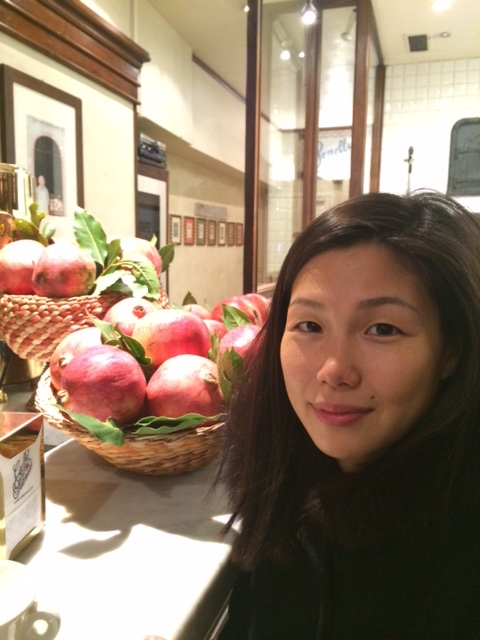

Jenny Min was born and raised in New York from Korean lineage, and has been living in Florence, Italy for almost ten years. She trained under master artisan, Romano Pampaloni, in traditional Roman throwing. Her work is inspired by the culture that surrounds her, which is then refined with her asian aesthetics. Her maestro once asked her if any one of her ancestors used to be potters because she showed an adept skill that could have only been inherited.
